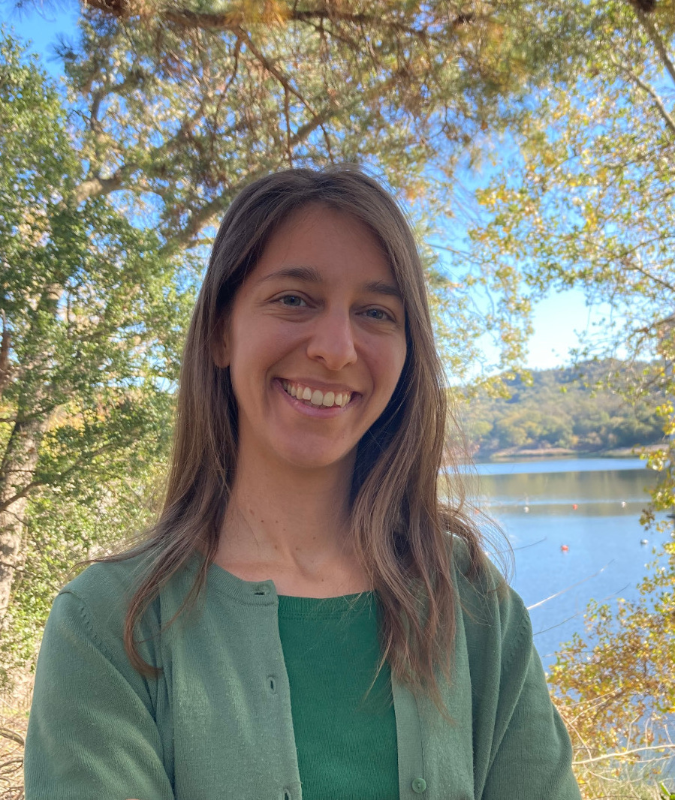

Georgia V. (Gina) Panopoulou
Home Projects Publications Code/Data Outreach CV
About me
I am an Assistant Professor at Chalmers University of Technology and part of the Division of Astronomy and Plasma Physics.
My research focuses on understanding the Physics of the Interstellar Medium, the nature of Galactic magnetism and the initial conditions of star formation. https://orcid.org/0000-0001-7482-5759
https://orcid.org/0000-0001-7482-5759Research interests
- Magnetic fields in the ISM
- Filamentary structures in molecular clouds
- Polarimetry
- Statistical methods
- 3D mapping techniques